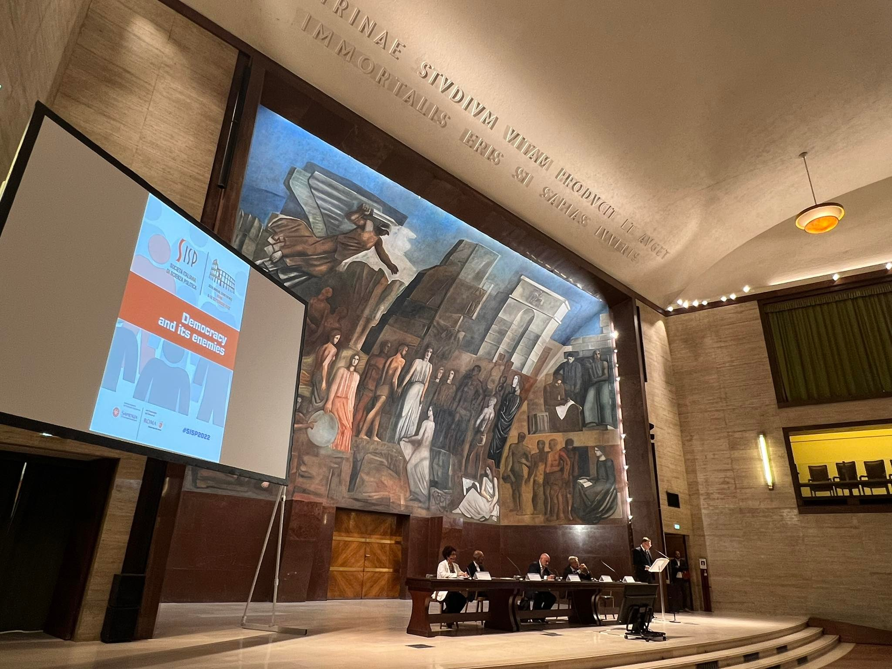

Enrico Borghetto - Academic website
CV
Posts
Research
Projects
Categories
All
(55)
CAP
(6)
Conferences
(1)
European Union
(1)
Italy
(1)
Press
(1)
academia
(1)
conferences
(12)
constirep
(4)
legitech
(8)
replaneu
(7)
talks
(6)
trusteu
(3)
Posts
What do Eu think? Young people confront MEPs
conferences
academia
European Union
Mar 18, 2024
PhD defence at Aarhus University
Feb 8, 2024
Parliaments in the Pandemic Workshop in Prague
conferences
Nov 30, 2023
Exploring the Boundaries of European Union Citizenship: the TrustEU Project final Conference
talks
Nov 12, 2023
REPLAN seminar - Pari opportunità di ripresa? PNRR e uguaglianza di genere
replaneu
Nov 1, 2023
Digital politics - Opportunità e sfide per la democrazia
legitech
Nov 1, 2023
Participation in the Annual conference of Italian political scientists in Genova
Sep 17, 2023
The IdPS special issue on the impact of the pandemic on governments and parliaments is out
legitech
Jul 26, 2023
Participation in the IPSA conference 2023 in Buenos Aires
conferences
Jul 23, 2023
Comparative Agendas Conference 2023
CAP
Conferences
Jul 1, 2023
Hambach democracy dialogue 2023
conferences
Jun 17, 2023
EU Talks 2023
Jun 4, 2023
Participation in the ECPR Joint Sessions 2023
conferences
May 1, 2023
REPLAN-EU conference “Due anni di PNRR: tempo di un primo bilancio”
replaneu
Apr 21, 2023
Presentation on the “Future of Europe” at the Fondazione Circolo Rosselli
conferences
Jan 31, 2023
Expert table at the Southern Political Science Association Annual Conference 2023
conferences
Jan 14, 2023
Associate editor for the Italian Political Science Review
Jan 14, 2023
High-level conference: 10 years of Parliament’s democracy support activities
talks
Dec 1, 2022
Guest Lecture at Monash University Prato Centre
talks
replaneu
Nov 28, 2022
Third REPLAN-EU seminar: “Comunità energetiche, cosa sono e perché sono importanti per la transizione verde”
replaneu
talks
Nov 17, 2022
Presentation of the book “The Populism interviews” with the editor Luca Manucci
Nov 16, 2022
3rd Academic Workshop of Parliaments in the Pandemic
legitech
conferences
Nov 15, 2022
Democracy support seminar at the Moldovan parliament
talks
Nov 14, 2022
First ReplanEU seminar: “L’Europa e il rapporto tra l’uomo e l’ambiente”
replaneu
talks
Nov 4, 2022
Start of the Jean Monnet Module “REPLAN-EU”
replaneu
Nov 1, 2022
Interview for Euractiv Italy on Meloni’s speech
replaneu
Oct 30, 2022
Legitech panel at ICON-S Italia
legitech
conferences
Sep 17, 2022
Youth Political Representation Research Network’s first workshop in Ottawa
constirep
conferences
Sep 14, 2022

Annual Conference of Italian Political Scientists 2022
conferences
Sep 12, 2022
Ricercatori a scuola 2022-23
Sep 7, 2022
“Parliaments in the pandemic” Workshop n.2
legitech
conferences
Jul 21, 2022
CAP 2022 Annual Meeting
CAP
Jul 12, 2022
Event “Parlamento e governo alla prova della pandemia”
legitech
Jun 10, 2022
Tirana Summer School 2022 “Being European is cool!”
Jun 7, 2022
Legitech Conference 2022 in Villa Ruspoli
legitech
May 12, 2022
EU Talks 2022 - The final event
May 9, 2022
Second meeting of the Constirep project in Lille
constirep
Apr 26, 2022
Data Analysis in R - Scuola Superiore di Catania
Feb 25, 2022
The Project “Legitech” is awarded a grant by the University of Florence
legitech
Jan 19, 2022
First meeting of the Constirep project in Lisbon
constirep
Nov 3, 2021
Participation in the IPSA World Conference of Political Science 2021
Jul 17, 2021
Fiscoteca europa: il contributo dei giovani per un’Europa più equa
trusteu
Jun 22, 2021
Final event of Eu Talks - Dialoghi sul futuro dell’Europa
trusteu
Apr 30, 2021
EUtalks and the Conference on the Future of Europe
trusteu
Mar 22, 2021
I joined the Editorial Board of EJPR
Jan 6, 2021
New post in the LSE EUROPP blog with Derek Epp about our recent article in JEPP
Jun 15, 2020
New Assistant Professor position at the University of Florence
May 2, 2020
ConstiRep project was selected for funding by the Transnational Cooperation Program Pessoa
constirep
Mar 31, 2020
Award at the FCSH 41st Anniversary
Jan 8, 2020
My paper “The issue strategies of niche parties between elections” won the Carlo Maria Santoro award 2019
Sep 20, 2019
CAP Wins the Lijphart/Przeworski/Verba Dataset Award
CAP
Jun 4, 2019
Populism in Portugal (Interview with with Marco Lisi for “Jornal de negocios”, 15-03-2019)
Apr 3, 2019
Three chapters in the new “Comparative Policy Agendas” book
CAP
Mar 19, 2019
Special Issue on Policy Agendas in Italy
CAP
Italy
Jan 28, 2019
Working paper with Derek Epp featured in the Economist
CAP
Press
Jul 25, 2018
No matching items